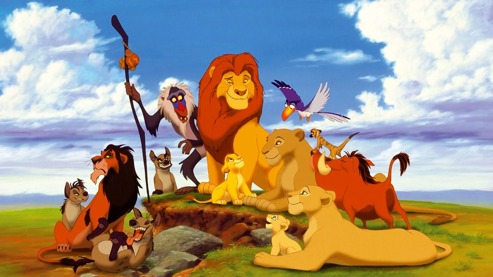
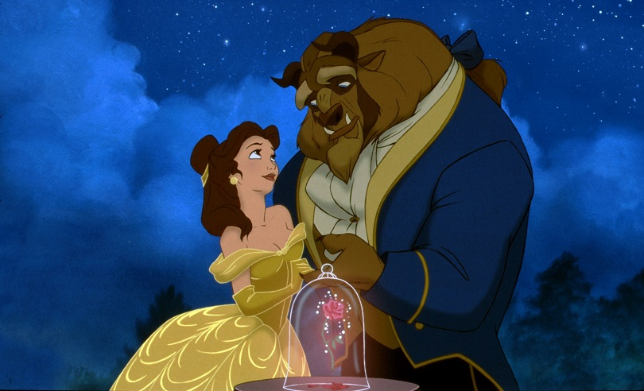
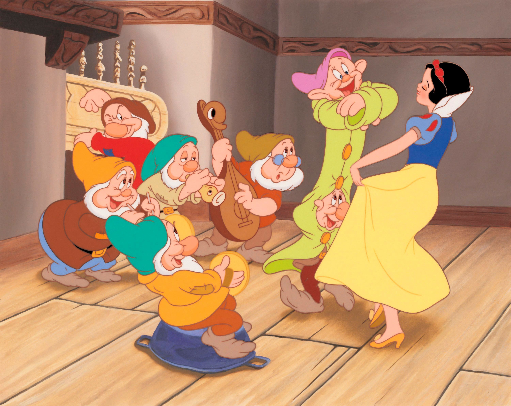
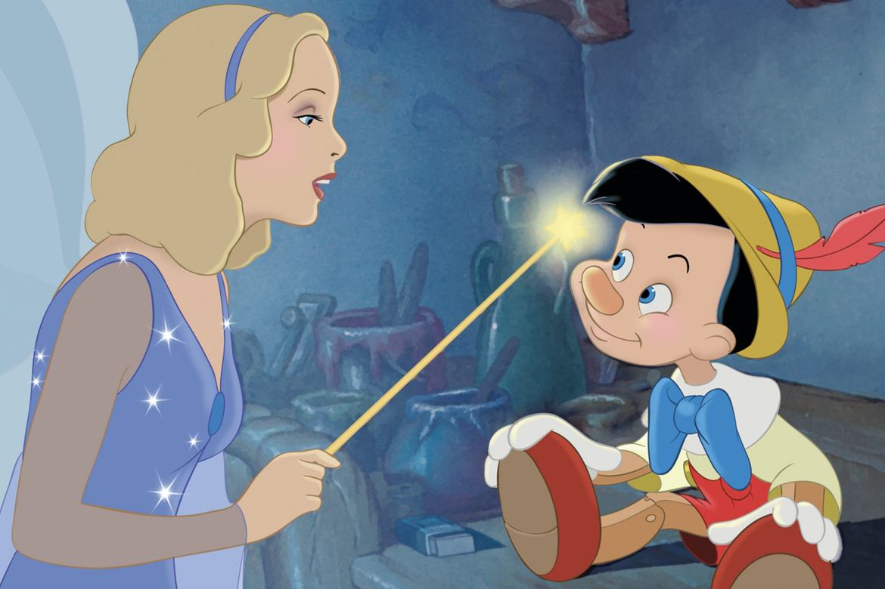
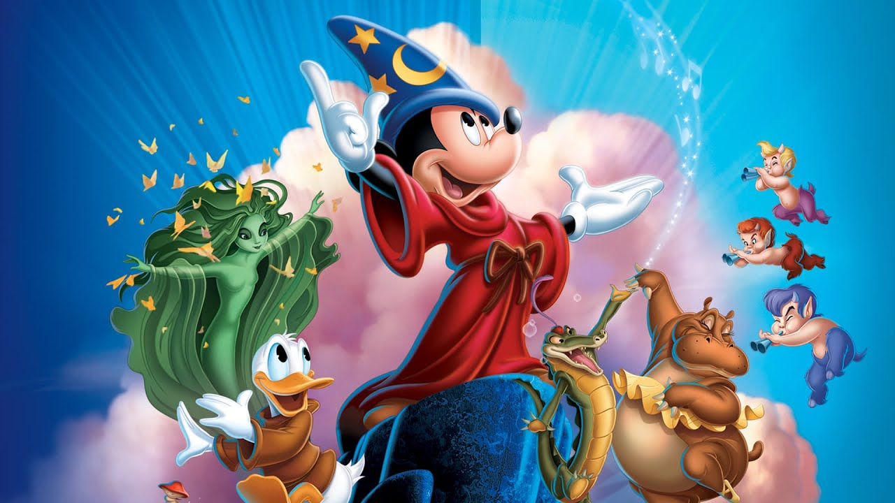
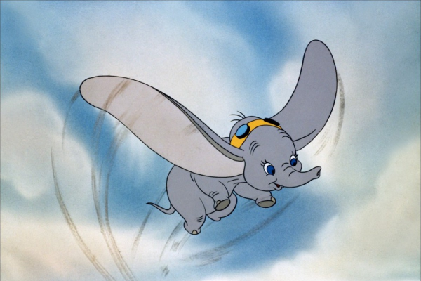
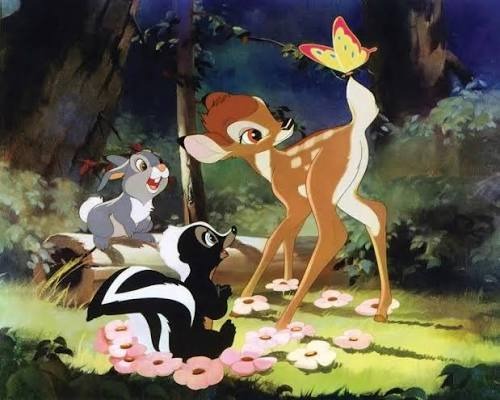
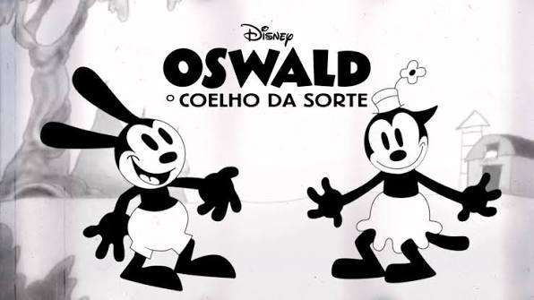
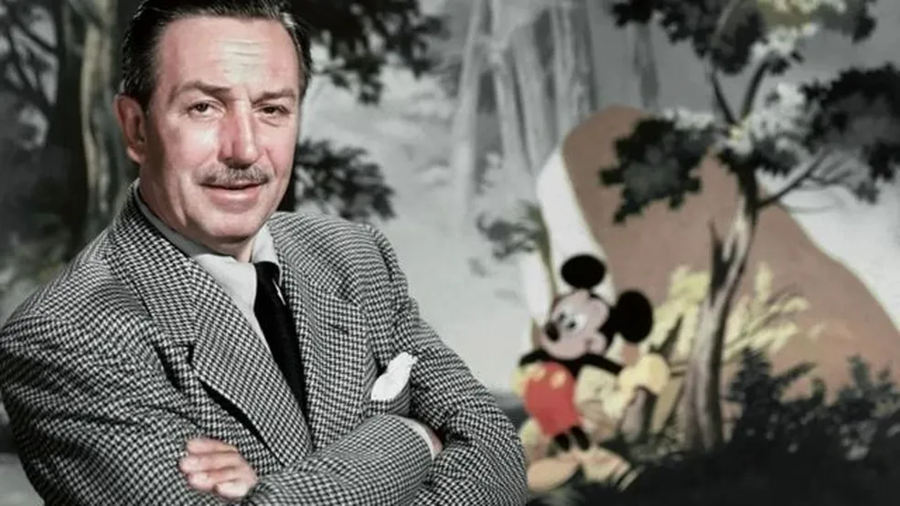
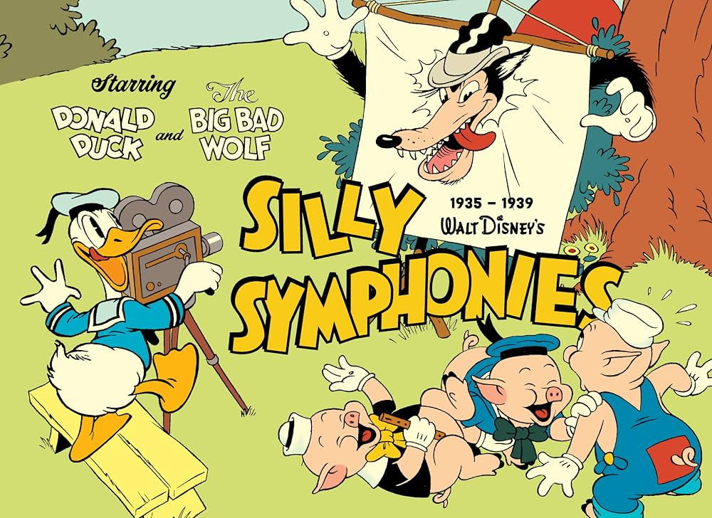

103 anos fazendo história
Uma viagem pela TV, pelas animações que transforam tardes comuns em grandes aventuras
Os maiores
O Rei Leão e A Bela e a Fera são considerados os maiores clássicos da Disney por terem redefinido o cinema de animação em termos de impacto cultural, conquistas técnicas e sucesso financeiro. Ambos representam o ápice da chamada "Renascença da Disney"

A maior bilheteria de
animação tradicional da história e um fenômeno cultural sem precedentes. Destacou-se por ser uma história original e madura (inspirada em Hamlet de Shakespeare), combinada com uma trilha sonora memorável de Elton John que vendeu milhões de cópias.
A primeira animação
indicada ao Oscar de Melhor Filme na história do cinema. O filme se destacou por seu roteiro impecável com estrutura de musical da Broadway e pelo uso revolucionário de computação gráfica (CGI) na famosa cena do baile.
faixa de ouro
A Era de Ouro da Disney (1937–1942) inaugurou os longas-metragens do estúdio com inovações revolucionárias. Sob o comando de Walt Disney, o período transformou a animação em grande arte cinematográfica.

Branca de Neve e os Sete Anões (1937): O primeiro
longa-metragem de animação da história, que provou ao mundo que desenhos animados podiam emocionar e carregar uma narrativa complexa no cinema

Pinóquio (1940): O ápice técnico da animação tradicional,
aclamado por seus efeitos visuais revolucionários na água e no fogo, além de vencer os primeiros Oscars competitivosdo estúdio.

Fantasia (1940): Uma obra-prima experimental
de vanguarda, que uniu a animação clássica à música erudita regida por Leopold Stokowski, introduzindo o som estéreo nos cinemas.

Dumbo (1941): A produção mais simples e
lucrativa da fase, feita com orçamento reduzido para salvar o estúdio da crise, conquistando o público por sua forte carga emocional.

Bambi (1942): O ápice do realismo na
animação de animais, marcado por estudos anatômicos profundos e fundos impressionistas a óleo que encerraram o período com extrema sensibilidade.
As Origens (1923–1928): Walt Disney e seu irmão Roy fundam o estúdio e criam Mickey Mouse em Steamboat Willie, o primeiro desenho com som sincronizado da história.
.jpg)
Fundação (1923): Walt e Roy Disney
fundam o estúdio em Hollywood, inicialmente focado em curtas-metragens que misturavam atores reais com desenhos animados.

O primeiro sucesso (1927): Criam Oswaldo,
o Coelho Sortudo, mas perdem os direitos do personagem e quase toda a equipe para um distribuidor rival.

Nascimento do Mickey (1928): Para dar
a volta por cima, Walt cria o Mickey Mouse. O curta Steamboat Willie estreia no mesmo ano, revolucionando a indústria como o primeiro desenho com som totalmente sincronizado.

Silly Symphonies (1929–1939): Uma série
de curtas usada para testar novas tecnologias, incluindo o primeiro desenho em cores (Technicolor de 3 tiras) em 1932, pavimentando o caminho para os futuros longas-metragens.